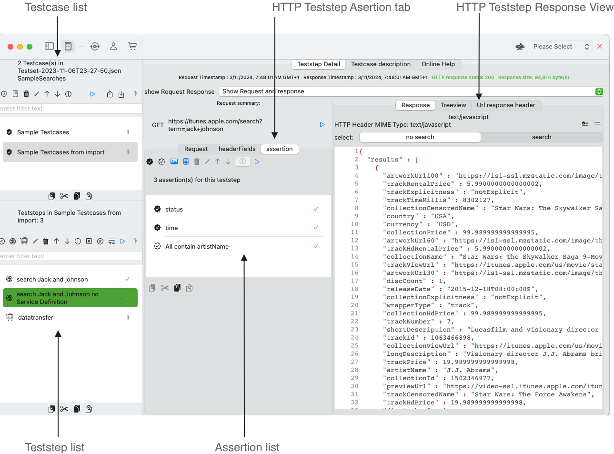

Randomized Valuelist Teststep
A Randomized Valuelist Teststep takes a table of values (CSV-File technically) and provides randomized values from this table in variables that can be used in web service requests. The purpose is to permutate request data to a maximum. This helps to test efficiently webservices with a varying (even small) set of test data. A small number of data can thus provide more combinations when repeating a test. Repeating testcase without variation has only limited benefits. You would not test thoroughly and test all combinations of testcases is an endeavour that only few testers will continue to perform in the sense of regression testing. See Create a RandomizedValuelist Teststep to add a new RandomizedValuelist Teststep for a testcase.
Overview of the configuration options
The teststep configuration foresees the following elements:
- enable/disable columns
- randomizing on a row base or randomizing for each column
- show/hide columns
- configure the output variables (name / parent element)
The following example displays favorite U.S. first and common last names, together with a combination of some postal codes and states. The premise is to combine first and last names randomly and keep a given postal code and state combination. We would use two Randomizedvaluelist teststeps to perform this task.
Randomizedvaluelist Teststep view details

The view contains three main parts
- Column editor (upper left) and column formatting
- Variables transfer (lower left)
- Formatted value list preview (table view on the right)
Column editor view
A CSV file is interpreted as a list of rows consisting of equal columns. You may have been provided with a file and may configure the columns that you want to use and foresee further formatting
- Enable columns: A column value is transferred to a variable only, if the column is enabled. You may exclude (ignore) columns in a CSV file. That way you don't need to modify the CSV file itself. All selected columns are enabled independent of their current state.
- Disable columns: The selected columns are disabled. No value will be transferred to the connected variable. IF there is a value in the variable e.g. due to manual editing or previous runs, this value will remain. You may optionally remove the variable. A column that is disabled has the platform specific secondary color, in general this is grey instead of dark black text color, both in the column list and the Value list preview on the right side.
- Show columns: A column can be displayed and not displayed in the preview. This may help you to focus on specific columns during editing. This has impact on the actual transferral on variables. A column that is shown has a different Icon that one that is not displayed.
- Hide columns: Removes all selected columns from the preview, You may focus on a single column or any subset of columns that you want to inspect and/or format.
Formatting
The formatting view is visible when you select a single column in the column editor view. The formatting options depend on the underlying type that was identified during the process of reading the CSV file.
- String values
- Numbers (Integers, Double, Float)
- Dates
String values can be any text, boolean values or dates in text representations that are not recognized. While booleans can be easily interpreted by changing the reading options> the text representation of dates may vary for each column. Therefore, you may choose to redefine a column value type from string to date and apply formatting for the data when transferred to a variable: Numbers (Integers, Double, Float) are in general easy to interpret, Here you can apply a number formatting for positive and negative values: Dates are identified if they follow the ISO 8601 string representation. If the CSV file holds dates with a different date format, you may still process them by applying the Treat as Date flag.
Output view (Variables' transfer configuration)
A randomized value list foresees a variable transfer for each column that is enabled. The variables can be connected to the testcase, parent teststep or parent repository. You will only be able to run the teststep successfully, when you have created and connected variables to each individual columns. This can be done with a single click and repeated whenever required.
- Show output view (variables connected with columns): shows or hides the entire view. Once the configuration is done you may hide this view.
- run randomize teststep and update variables: This command is equal to the run command in the teststep list view. It provides a randomized value for each column and updates the referenced variable.
- select randomize typeYou may want to randomize columns independently or row-based. In our example file, you may want to randomize first names and last names independently. You may want to keep the columns postal code and state together. In This case you would work with two teststeps referring the same CSV file.
- run randomize teststep and preview results: This command can be run without referenced variables. It displays the randomized values for all enabled columns with their respective formatting.
- default connect between variables and columns: Each column must be assigned a variable in order for the randomized value to be transferred. This command would create a variable for each enabledcolumn. When you click this button again, the existing variables will be deleted and replaced by a new set of variables.
You may change the variables reference in the.
Manual configuration of the variables' transfer
When you select a single line in the output view, the view is split in two vertical sections. The output view shrinks horizontally and provides the option to edit the variables transfer reference.

- The selected column value displays name and value of the randomized column.
- The button remove variable reference gives the option to configure a different variable reference by selecting the parent testcase, testset or repository and select one of their attached variables including creating a new variable.
- variable value displays the current value of the referenced variable. This should be same value as the randomized
Formatted value list preview
The formatted value list preview displays all rows in the CSV file with all shown columns and applied formatting for each column.

- Button Show/hide CSV reading config button (un)discloses a button to show the CSV reading configuration.
- open configuration button opens a dialog to configure the options when a CSV is read.
- file url: When you select a file from your desktop, the file url is stored. The file data is read and its contents are stored with the formatting options as separate information.
- Button source data reads the file url data and displays the data in text file view without overriding any column configurations.
- number of rows in file displays the number of rows applying the configuration option empty lines.
- CSV file data with configuration displays the formatted columns. Columns that are disabled are shown with the system' secondary color, this may be gray instead of black text color on your system.
CSV file reading options
A CSV file may have various textual representations. Depending on your output requirement you may need to modify the default values.

- You MUST provide row headers
- you may ignore empty lines, they will not appear as rows in the preview data list
- Your CSV file may use escaping, verify if the escape character fits
- Your CSV file may use quotes for your columns
- You may list a set of false encodings
- You may list a set of nil encodings
- You may list a set of true encodings
- OK saves your changes and dismisses the dialog
- Cancel flushes your changes and dismisses the dialog
HTTP Teststep assertion list
Testing webservices can become repetitive and cumbersome. Assertions help you to automate checks and free you from repetitive error-prone verifications. You will find more time to further explore responses and find unexpected behaviour. Assertions have their own tab in the HTTP Request view and allow you for editing assertions while viewing the Response.
